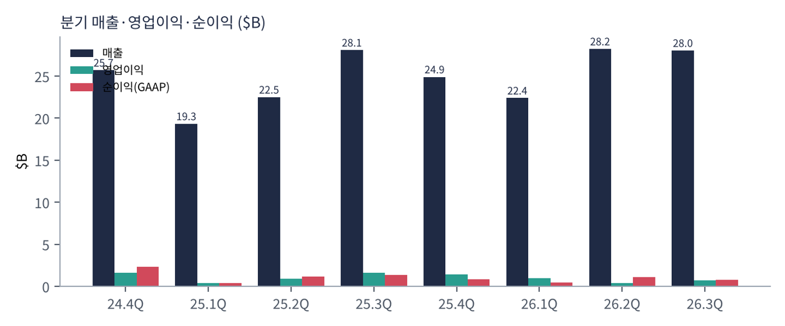
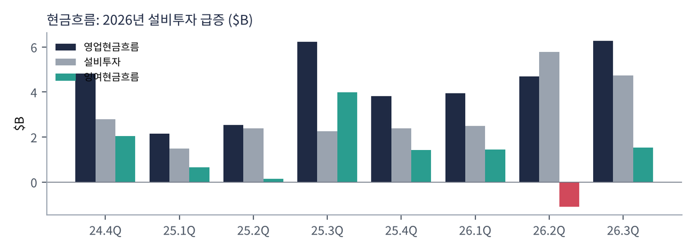
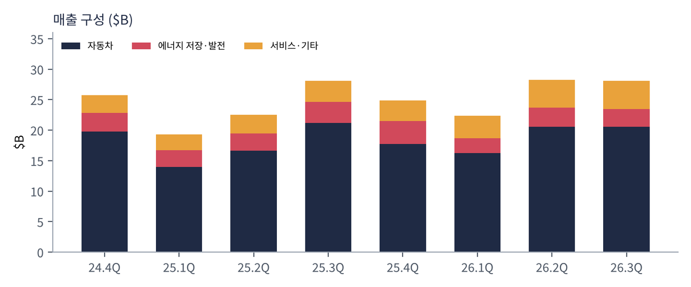
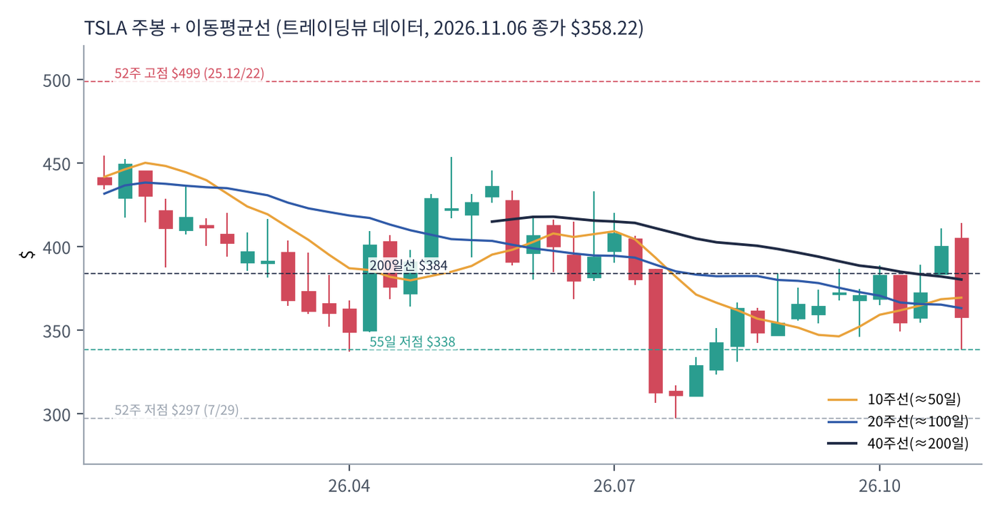
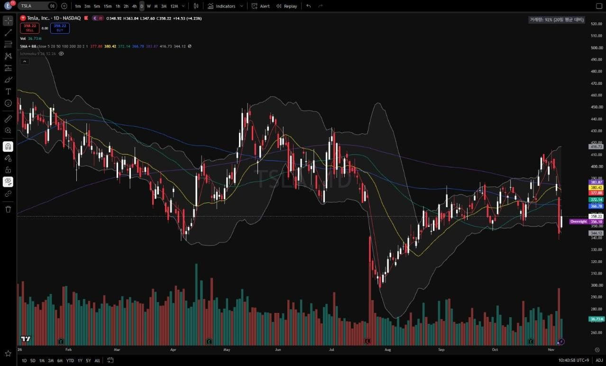
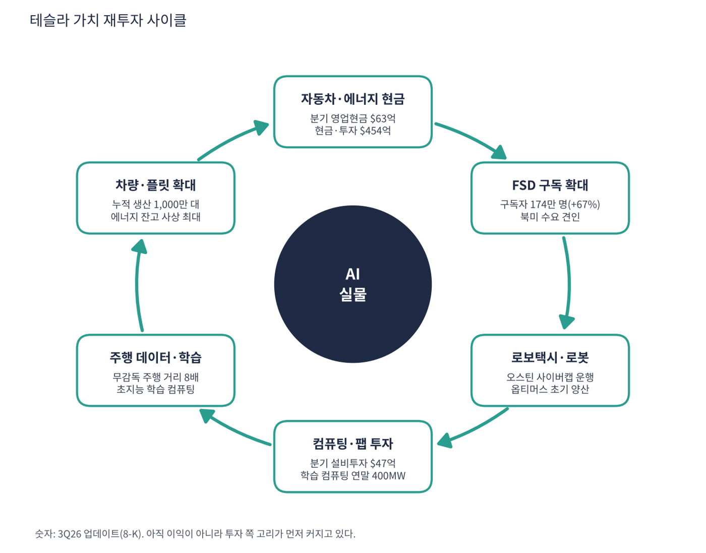

테슬라는 세계 최대 전기차 회사이자 에너지 저장 장치(메가팩·파워월) 회사다. 일론 머스크 CEO는 테슬라를 "자동차 회사가 아니라 AI·로봇 회사"로 정의한다. 실제 매출의 73%는 아직 자동차지만, 시가총액은 로보택시·옵티머스 같은 미래 사업의 가치를 반영한다. 2025년 주주총회에서 승인된 CEO 성과 보상은 누적 차량 인도, FSD 구독자 수, 로보택시 운행 대수 같은 지표에 연동돼 있다.
| 항목 | 내용 |
|---|---|
| 종목 | Tesla, Inc. (TSLA) · NASDAQ · 자동차·에너지 · 2003년 설립 · 본사 텍사스주 오스틴 |
| 시가총액 | 약 $1조 4,160억 · TTM PER 394배 · 배당 없음 (트레이딩뷰, 11/6 종가 $358.22) |
| 최근 분기(3Q26) | 매출 $280.5억(0%), 영업이익 $7.2억(2.6%), 순이익 $7.9억, EPS $0.22 |
| 현금·투자 | $454억 (3Q26 8-K), 총부채 $164억(트레이딩뷰) |
| 생산 능력 | 차량 연 250만 대 이상(캘리포니아·상하이·베를린·텍사스), 메가팩 110GWh |
| 다음 이벤트 | 4Q 인도량: 2027년 1월 초 / 4Q 실적: 1월 말 예상 (회사는 수치 가이던스를 주지 않음) |
| 직책 | 인물 | 역할·특징 |
|---|---|---|
| CEO | 일론 머스크 | 테슬라를 '놀라운 풍요(Amazing Abundance)'를 만드는 AI·로봇 회사로 규정. 스페이스X 등 다른 회사와 경영 시간을 나눠 씀 |
경영 스타일: '지금 이익보다 다음 시장'. 3분기 업데이트의 첫 문장은 "초지능(SI), 로봇, 재생에너지에 걸친 많은 프로젝트에서 강한 모멘텀을 유지했다. 이는 '놀라운 풍요'의 미래를 만드는 데 핵심이다"였다. 분기 영업비용이 1년 새 $34억에서 $48억(+40%)으로 늘고 설비투자가 2분기 $58억, 3분기 $47억으로 1년 전의 2배 이상이다. 회사는 수치 가이던스를 주지 않고 "공장 최대 가동" 같은 방향만 제시한다. 영업이익률은 5.8% → 2.6%로 낮아져도 투자를 줄이지 않는다.
FSD(감독형)와 무감독 로보택시(오스틴 사이버캡, 9/3 운행 시작), 옵티머스 초기 양산, 텍사스 Cortex 학습 컴퓨팅(225MW+, 연말 400MW 목표), 오스틴 자체 반도체 팹(2027년 장비 반입), 4680·LFP 배터리 셀까지 수직 계열화한다.
소프트웨어만 하는 AI 회사와 달리 칩·배터리·공장·차량까지 직접 가진다. 강점이자 막대한 투자가 필요한 이유다. 이익 구조를 '하드웨어 이익 + 초지능·소프트웨어·플릿 기반 이익'으로 바꾸는 것이 목표다.
| 분기 | 매출 | YoY | 매출총이익률 | 영업이익 | 이익률 | 순이익 | EPS | 영업현금 | 설비투자 | FCF | 인도 | 특이 사항 |
|---|---|---|---|---|---|---|---|---|---|---|---|---|
| 24.4Q | $257억 | – | 16.3% | $15.8억 | 6.2% | $23.2억 | 0.61* | $48.1억 | $27.8억 | $20.3억 | 49.6만 | 순이익에 비트코인 평가이익 등 포함 |
| 25.1Q | $193억 | – | 16.3% | $4.0억 | 2.1% | $4.1억 | 0.12 | $21.6억 | $14.9억 | $6.6억 | 33.7만 | |
| 25.2Q | $225억 | – | 17.2% | $9.2억 | 4.1% | $11.7억 | 0.33 | $25.4억 | $23.9억 | $1.5억 | 38.4만 | |
| 25.3Q | $281억 | – | 18.0% | $16.2억 | 5.8% | $13.7억 | 0.39 | $62.4억 | $22.5억 | $39.9억 | 49.7만 | |
| 25.4Q | $249억 | -3% | 20.1% | $14.1억 | 5.7% | $8.4억 | 0.24* | $38.1억 | $23.9억 | $14.2억 | 41.8만 | |
| 26.1Q | $224억 | +16% | 21.1% | $9.4억 | 4.2% | $4.8억 | 0.13 | $39.4억 | $24.9억 | $14.4억 | 35.8만 | |
| 26.2Q | $282억 | +26% | 16.8% | $4.0억 | 1.4% | $11.1억 | 0.32 | $47.0억 | $57.9억 | -$10.9억 | 48.0만 | 설비투자 급증, FCF 마이너스 |
| 26.3Q | $280억 | -0% | 19.6% | $7.2억 | 2.6% | $7.9억 | 0.22 | $62.6억 | $47.3억 | $15.3억 | 48.7만 | FSD 구독 174만, 사이버캡 운행 |
EPS는 희석 주당순이익(GAAP, SEC 제출 자료 기준)이다. *는 4분기를 '연간 EPS − 1~3분기 합'으로 계산한 근사치라 실제 발표값과 다를 수 있다.


흐름 요약: 매출은 2년째 제자리, 이익은 줄었다. 분기 매출은 $190~280억 사이를 계절성으로 오간다. 매출총이익률은 18% → 19.6%로 좋아졌지만 영업이익률은 5.8% → 2.6%로 낮아졌다. 원가 경쟁력이 아니라 R&D(초지능·옵티머스·사이버캡)와 감가상각이 이익을 누르고 있다. 현금은 넉넉하다. 2Q26 설비투자 $58억으로 FCF가 -$11억이었지만 3Q26 +$15억으로 돌아왔고, 최근 4분기 FCF는 $33억(영업현금 $187억 − 설비투자 $154억)이다.
| 사업 | 돈을 버는 방식 | 3Q26 매출 | 비중 | YoY |
|---|---|---|---|---|
| 자동차 | 모델 3·Y 판매(인도의 98%), 사이버트럭, 세미, 규제 크레딧, FSD 일시불 판매 | $205.6억 | 73% | -3% |
| 에너지 저장·발전 | 메가팩(전력망·데이터센터용), 파워월(가정용), 태양광 | $28.8억 | 10% | -16% |
| 서비스·기타 | 충전, 보험, 중고차, 정비, FSD 구독, 로보택시 운임 | $46.1억 | 16% | +33% |

| 운영 지표 | 3Q25 | 4Q25 | 1Q26 | 2Q26 | 3Q26 |
|---|---|---|---|---|---|
| FSD 구독자 | 104만 | 110만 | 128만 | 148만 | 174만 |
| 에너지 저장 설치 | 12.5GWh | 14.2GWh | 8.8GWh | 13.5GWh | 13.7GWh |
| 재고 일수 | 10일 | 15일 | 27일 | 15일 | 11일 |
| 슈퍼차저 커넥터 | 7.4만 | 7.8만 | 8.0만 | 8.2만 | 8.4만 |
미래 매출은 지금 매출표에 거의 없다. 로보택시 운임은 서비스 매출의 아주 작은 부분이고 옵티머스는 아직 매출이 없다. 가장 빠르게 크는 것은 서비스·기타($28억 → $46억)이고 FSD 구독자가 3분기에 +67%(174만)다. 자동차는 인도 48.7만 대(-2%)로 정체이고 배터리 가용성이 생산 확대의 제약이라고 회사는 밝혔다.
3분기 업데이트의 방향은 "초지능(SI), 로봇, 재생에너지에 걸친 강한 모멘텀"과 "놀라운 풍요"다. 행동에서 읽히는 목적은 'AI가 움직이는 실물(차·로봇·전력)을 직접 만드는 회사'다.
| 축 | 내용 |
|---|---|
| 자율주행 | FSD(감독형) 누적 주행 수십억 마일, 무감독 로보택시 주행 거리 전 분기 대비 8배. 9/3부터 오스틴에서 사이버캡 운행 |
| 로봇 | 옵티머스 캘리포니아 초기 양산, 텍사스 공장 건설 중 |
| 초지능 컴퓨팅 | 텍사스 Cortex 1·2(225MW 이상) 가동, 연말 400MW 목표. 차량·휴머노이드 자율 소프트웨어 학습용 |
| 반도체·배터리 수직 계열화 | 오스틴 팹(2027년 장비 반입), 4680 셀 40GWh, LFP 셀 네바다 초기 생산, 리튬 정제·양극재 공장 |


위: 트레이딩뷰 주봉 데이터로 재구성(10·20·40주선). 아래: 트레이딩뷰 공개 차트 일봉 캡처(작도 숨김, 이동평균선·볼린저밴드만 표시).
| 이동평균 | 값 | 종가 대비 | 해석 |
|---|---|---|---|
| 5일선 | $377.88 | -5.2% | 11월 첫 주 급락 반영 |
| 20일선 | $380.42 | -5.8% | |
| 50일선 | $372.14 | -3.7% | |
| 100일선 | $366.78 | -2.3% | 가장 가까운 저항 |
| 200일선 | $383.87 | -6.7% | 50일선이 아래(데드크로스 상태) |
2025년 12월 고점($499) 이후 1년 가까이 $300~450 하락형 박스권이다. 이동평균선 5개가 $367~384에 몰려 있어 방향이 정해지지 않았다. 10월 말 $411까지 올랐다가 11월 첫 주 장중 $338까지 -18% 밀린 뒤 $358에 마감했다.
| 규칙 | 기준 | 현재 값 | 신호 |
|---|---|---|---|
| 장기 추세 필터 | 종가 vs 200일선 | $358.22 < $383.87 | 매도 |
| 중장기 교차 | 50일선 vs 200일선 | $372.14 < $383.87 | 매도 |
| 단기 교차 | 20일선 vs 50일선 | $380.42 > $372.14 | 매수 |
| 돈키언 채널 | 55일 고가 $414.23 / 저가 $338.15 | 중간값 $376.19 아래 | 매도 |
| 1개월 모멘텀 | 21거래일 수익률 | -4.5% (기준 $375.00) | 매도 |
| 3개월 모멘텀 | 63거래일 수익률 | +8.3% (기준 $330.88) | 매수 |
| 6개월 모멘텀 | 126거래일 수익률 | -16.4% (기준 $428.35) | 매도 |
| 12개월 모멘텀 | 252거래일 수익률 | -22.5% (기준 $462.07) | 매도 |
| 종합 (8개 평균) | -0.50 | 매도 우위 |
해석: 장기 신호(200일선, 50/200, 6·12개월)는 매도, 단기(20/50 교차, 3개월)는 매수로 엇갈린다. 이동평균선이 모두 $367~384에 있어 $384를 넘으면 점수가 0~+0.25로 오를 수 있다. 14일 ATR $17.99 (5.0%).
| 가격 | 무엇이 바뀌나 | 의미 |
|---|---|---|
| $367 ~ 376 | 100·50일선, 돈키언 중간값, 1개월 기준가 | 채널·1개월 모멘텀 매수 → 점수 0 |
| $384 | 200일선 회복 | 점수 +0.25 가능, 추세 필터 매수 |
| $428 / $462 | 6개월 / 12개월 모멘텀 기준가 | 박스 상단 돌파가 필요한 자리 |
| $338 이탈 | 55일 저점 | $331(3개월 기준) 이탈 시 점수 -0.75 |
| 구분 | 가격대 | 근거 |
|---|---|---|
| 저항 2 | $410 ~ 430 | 10월 말 고점, 6개월 기준가 |
| 저항 1 | $367 ~ 384 | 이동평균선 밀집(50·100·200일선), 돈키언 중간값 |
| 지지 1 | $331 ~ 338 | 55일 저점, 3개월 기준가 |
| 지지 2 | $297 ~ 310 | 7월 연저점($297, 2분기 실적 후) |
회사가 수치 가이던스를 주지 않아 주가는 실적이 아니라 4Q 인도량(1월 초)과 로보택시 확장 발표 같은 이벤트에 반응한다. $331~358 하단에서 분할 매수하고 1차 $384(200일선), 2차 $420(10월 고점권)에서 익절한다. $318 종가 이탈 시 손절하고 $297~310 시험을 열어 둔다. $367~384 이동평균선 밀집대를 넘으면 추세 전환의 첫 신호다.
| 악재 요인 | 내용 | 강도 |
|---|---|---|
| 밸류에이션 | PER 394배·P/S 13.7배. 로보택시·옵티머스 기대가 꺾이면 하락 폭이 큼 | 높음 |
| 이익 감소 | 영업이익률 5.8% → 2.6%, TTM EPS -39%. 투자가 이익을 누르는 구간이 길어질 위험 | 높음 |
| 자동차 경쟁 | BYD 등 중국 업체의 가격 경쟁, 유럽 점유율 하락, 인도 정체(-2%) | 중간 |
| 자율주행 경쟁·규제 | 웨이모 등 로보택시 경쟁, 국가별 FSD 승인 지연, 사고 위험 | 중간 |
| 배터리 공급 | 차량·에너지가 같은 배터리를 나눠 쓰며 생산 확대의 병목 | 중간 |
| 경영 집중도 | 머스크의 다른 회사(스페이스X 등) 활동과 경영 시간 분산 | 참고 |
| 티커 | 회사 | 시가총액 | PER(TTM) | PEG | P/S | EPS 성장(YoY) |
|---|---|---|---|---|---|---|
| TSLA | 테슬라 | $1,416B | 394.0배 | – | 11.61배 | -39% |
| GM | GM | $73B | 19.8배 | – | 0.39배 | -12% |
| TM | 도요타 | $247B | 9.9배 | – | 0.75배 | -7% |
| F | 포드 | $50B | 적자 | – | 0.27배 | – |
| RACE | 페라리 | $91B | 38.6배 | 6.16 | 8.69배 | +3% |
| RIVN | 리비안 | $20B | 적자 | – | 2.95배 | +28% |
포드·리비안은 TTM 순손실이라 PER이 없다. GM·도요타의 EPS 성장률은 감소다. 페라리 PEG 6.2는 EPS가 거의 늘지 않아서 높게 나온 값이다.
비교 결론: 일반 자동차 회사 PER은 도요타 9.9배, GM 19.8배(11/6 환산)인데 테슬라는 394배로 20~40배다. 가장 비싼 자동차 회사인 페라리(38.6배)와도 10배 넘게 차이난다. 시장이 테슬라에 자동차 회사 이상의 가치를 주고 있고, 그 가치의 정당성은 PER이 아니라 로보택시·FSD 구독의 속도로 판단해야 한다.
테슬라는 적자 기업이 아니다(순이익 $7.9억). 다만 이익이 거의 없고 설비투자가 급증하고 있어 현금이 투자 속도를 얼마나 견디나를 점검했다.
| 지표 | 값 | 계산·출처 | 해석 |
|---|---|---|---|
| 최근 4분기 영업현금 | $187억 | 25.4Q~26.3Q 합계 | 분기 $38~63억 사이 |
| 최근 4분기 설비투자 | $154억 | 같은 기간 합계 | 2026년 1~9월에만 $130억 |
| 잉여현금흐름(FCF, TTM) | +$33억 | 영업현금 − 설비투자 (트레이딩뷰 $33억과 일치) | 아직 플러스지만 거의 0 |
| 현금·투자 / 총부채 | $454억 / $164억 | 3Q26 8-K / 트레이딩뷰 | 순현금 약 $290억 |
| 26.3Q 단일 분기 FCF | +$15억 | 영업현금 $62.6억 − 설비투자 $47.3억 | 2Q26은 -$11억 |
| 시나리오 | 연간 설비투자 | 연간 FCF | 현금·투자 $454억이 버티는 기간 |
|---|---|---|---|
| A. 3Q26 속도 유지 | 약 $189억 | 약 -$2억 (거의 0) | 사실상 제한 없음 |
| B. 2Q26 속도 유지 | 약 $232억 | 약 -$45억 | 약 10년 |
| C. 설비투자 $300억으로 확대 (가정) | $300억 | 약 -$113억 | 약 4.0년 |
시나리오 C의 $300억은 회사가 숫자를 주지 않아 내가 가정한 값이다.
판단: 현금이 바닥날 위험은 낮다. 다만 이익이 줄어든 상태에서 설비투자가 $300억대로 커지면 현금은 서서히 줄어든다. 이 투자(초지능 컴퓨팅·팹·로봇)가 매출로 돌아오는 시점이 주가의 시간표다.
| 기준 | 매출 | P/S | 비고 |
|---|---|---|---|
| 트레이딩뷰 표시값(11/6 환산) | – | 11.6배 | 산출 기준 차이로 아래보다 낮음 |
| 최근 4분기(TTM) | $1,036억 | 13.7배 | 시총 $1.416조 ÷ $1,036억 |
| 동종 자동차 | – | – | 도요타 0.75, GM 0.39, 포드 0.27, 페라리 8.7, 리비안 3.0 |
해석: 테슬라 P/S는 일반 자동차 회사의 18~50배이고, 페라리(8.7배)보다도 높다. 시장이 테슬라를 자동차 회사로 보지 않고 로보택시·로봇·에너지 소프트웨어가 현재 매출의 몇 배로 커질 것이라는 가정에 값을 매기고 있다는 뜻이다. 이 가정이 늦어지면 P/S가 먼저 줄어든다.
| 지표 | 값 | 판정 |
|---|---|---|
| EBITDA (트레이딩뷰, TTM) | $103억 | 흑자 |
| 영업이익 (TTM) | $35억 | 25.4Q~26.3Q 합계 |
| 영업이익 → EBITDA 차이 | 약 $68억 | 감가상각·상각비(추정). 영업이익의 약 2배 |
| EBITDA 마진 | 9.9% | $103억 ÷ $1,036억 |
| 순부채 / EBITDA | 순현금 | 현금 $454억 > 부채 $164억 |
EBITDA는 흑자이지만 영업이익의 3배다. 감가상각이 이익의 대부분을 먹고 있다는 뜻이며, 설비투자가 커질수록 이 격차는 더 벌어진다. 자동차 회사 마진으로 보면 평범하고, 성장 기업 마진으로 보면 낮은 수준이다.
| 방식 | PER | EPS 성장률 | PEG | 판정 |
|---|---|---|---|---|
| 트레이딩뷰 (TTM, 11/6 환산) | 394배 | -39.3% | 산출 불가 | 산출 불가 |
| 직접 계산 (TTM EPS 약 $0.91) | 394배 ($358 ÷ $0.91) | -39% (EPS 감소) | 해당 없음 | 해당 없음 |
| PEG 1.0이 되려면 (역산) | 394배 | 연 +394% | 1.0 | 투자 적격 |
| EPS가 연 50%씩 3년 성장(가정) | 3년 후 약 117배 (EPS $3.07) | +50% | 7.9 (현재 PER 기준) | 기준 초과 |
판정: PEG는 산출 불가(EPS가 줄고 있음)이고, 역산하면 '기준 충족'과는 거리가 멀다. PER 394배는 이익이 아니라 이익이 생길 미래에 값을 매긴 숫자다. PEG 1.0이 되려면 EPS가 연 394%씩 늘어야 하는데 현실적이지 않고, EPS가 연 50%씩 3년을 늘어도 PER은 117배다. 그래서 테슬라는 PER·PEG로 평가하는 종목이 아니라 '로보택시·로봇이 매출이 되는지'를 확인하며 시간표로 평가하는 종목이다.

테슬라 사이클의 엔진은 자동차·에너지가 만드는 현금과 FSD 구독이다. 아직은 이익으로 돌아오는 고리보다 투자로 나가는 고리가 먼저 커진 단계다.
| 고리 | 현재 숫자 | 고리 강도 | 약해지는 신호 |
|---|---|---|---|
| ① 자동차·에너지 현금 | 분기 영업현금 $63억, 현금·투자 $454억, 매출 2년째 정체 | 정체 | 인도량 감소, 배터리 병목 장기화 |
| ② FSD 구독 확대 | 구독자 174만(+67%), 분기 서비스 매출 $46억(+33%) | 강함 | 구독 증가세 둔화, 해지 |
| ③ 로보택시·로봇 | 오스틴 사이버캡 운행, 옵티머스 초기 양산, 무감독 주행 8배 | 초기 | 사고·규제, 확장 도시 수 정체 |
| ④ 컴퓨팅·팹 투자 | 분기 설비투자 $47억(1년 전 2배), Cortex 400MW, 오스틴 팹 2027년 | 가속 | 투자 대비 매출 연결 지연 |
| ⑤ 주행 데이터·학습 | 무감독 주행 거리 8배, 누적 FSD 수십억 마일 | 강함 | 자율주행 승인 지연(국가별) |
| ⑥ 차량·플릿 확대 | 누적 생산 1,000만 대, 에너지 잔고 사상 최대 | 진행 중 | 생산 병목(배터리), 가격 경쟁 |
이 사이클의 구조: ①의 현금이 ④의 컴퓨팅·팹 투자로 가고, ⑤에서 학습한 소프트웨어가 ②·③으로 수익화되면 다시 ⑥ 차량·플릿이 늘어난다. 핵심은 ③이 수익이 되는 시점이다. 약한 고리는 ①(매출 정체)과 ③(초기 단계)이고, 강한 고리는 ②·⑤다. 영업이익률이 5.8% → 2.6%로 낮아진 것은 ④가 먼저 커졌기 때문이며, ③이 늦어지면 이 구간이 길어진다.